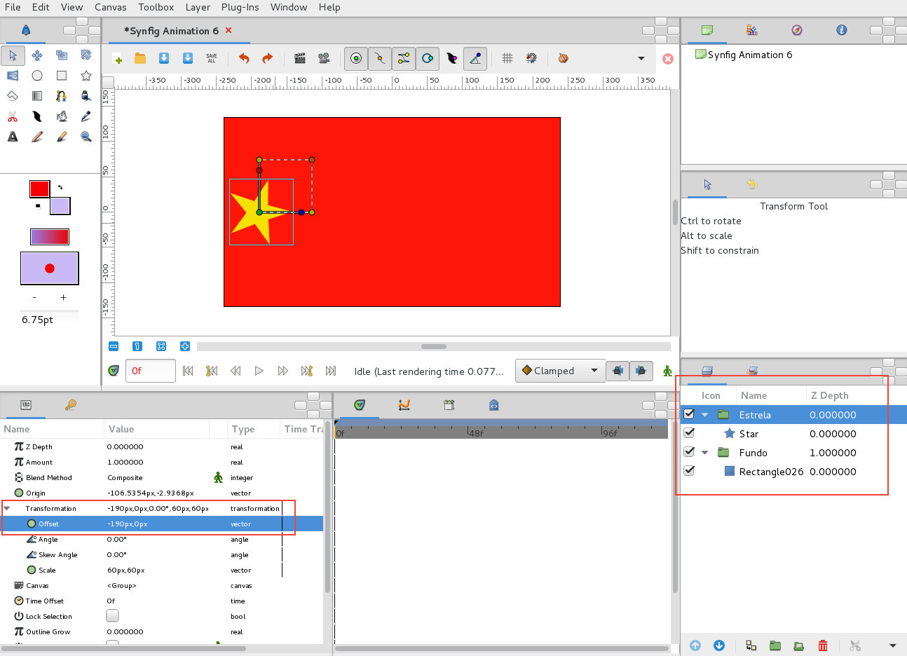
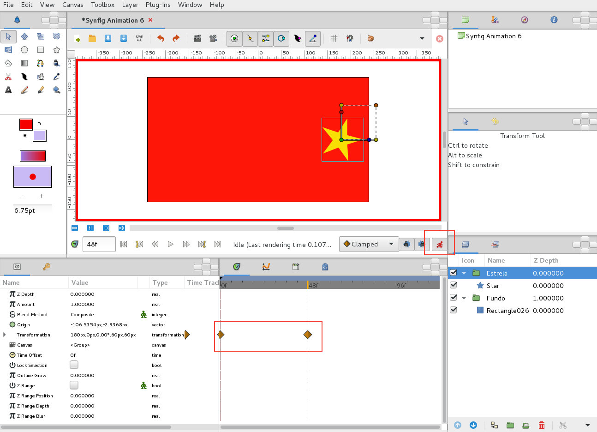
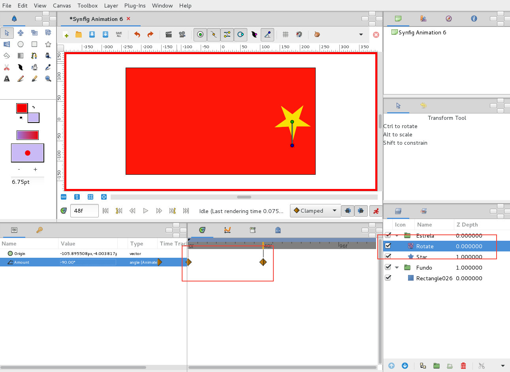
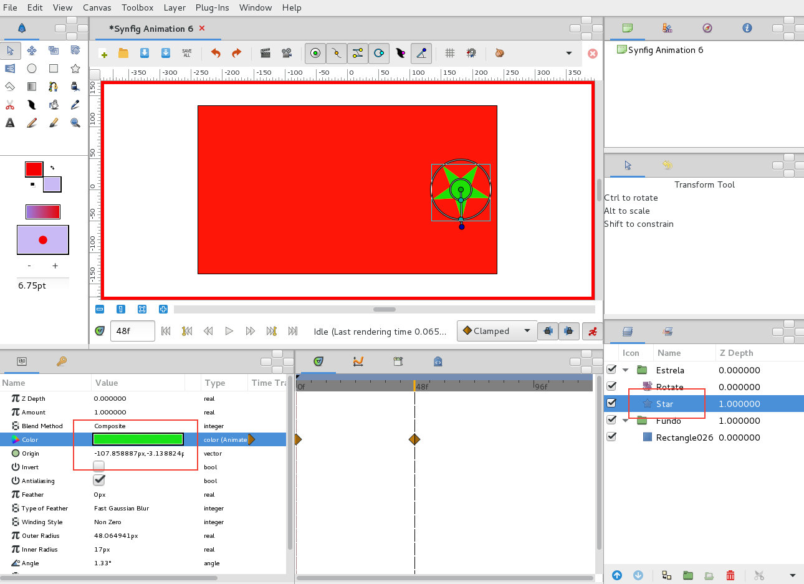
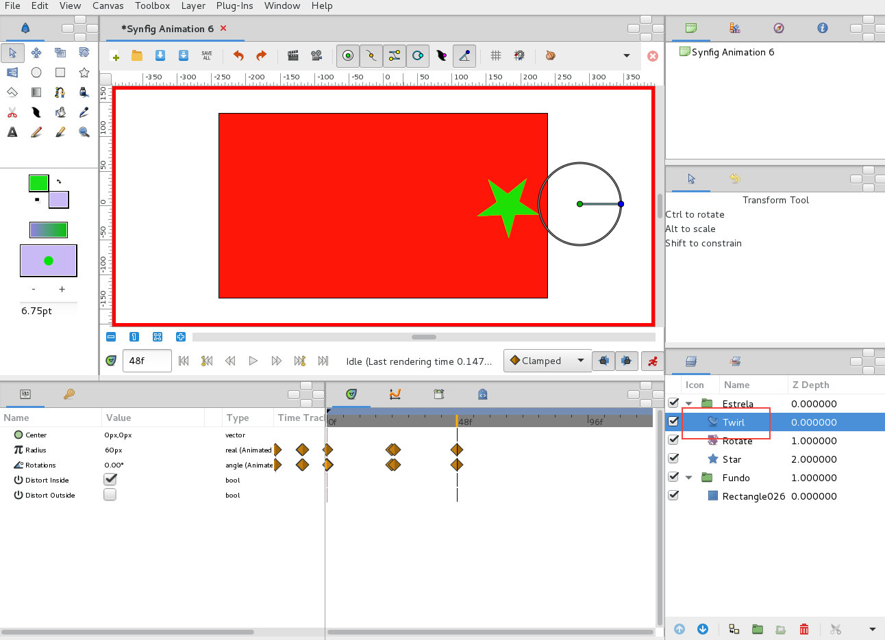

O tweening é uma interpolação automática criada pelo computador. No Synfig, são criados dois waypoints (ou keyframes) e o programa calcula os intermeios.
1. No exemplo abaixo foram criados 2 layers: Rectangle (que irá ser o fundo) e Star (que irá ser o objeto animado). Cada layer foi colocada dentro de uma Group Layer. O grupo da estrela foi colocado à esquerda, mais concretamente em -190px em X e 0px em Y.
2. Depois de ativado o modo de animação, avançámos até à frame 48 e movemos o grupo da estrela para 180px em X e 0px em Y. Foram criados dois waypoints que representam a posição do grupo na frame 0 e na frame 48. A animação abaixo foi criada automaticamente por tweening.
3. Desativado o modo de animação, voltámos à frame 0. Decidimos inserir uma layer de Rotation dentro do grupo da estrela mas acima da layer da estrela. O procedimendo seguido foi similar: foi ativado o modo de animação, avançámos até à frame 48 e inserimos -90º no parâmetro Amount da layer Rotation.
4. O mesmo procedimento fui utilizado para animar a cor e opacidade da estrela.
5. Finalmente, adicionámos uma nova layer com outro tipo de efeito para animar uma distorção da estrela.
